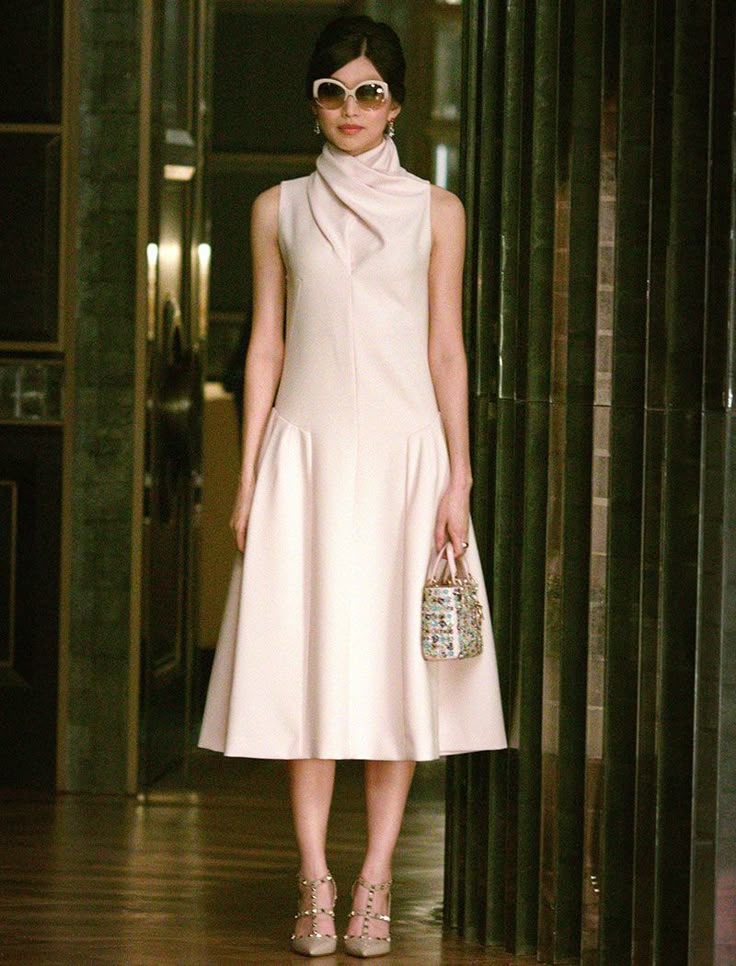
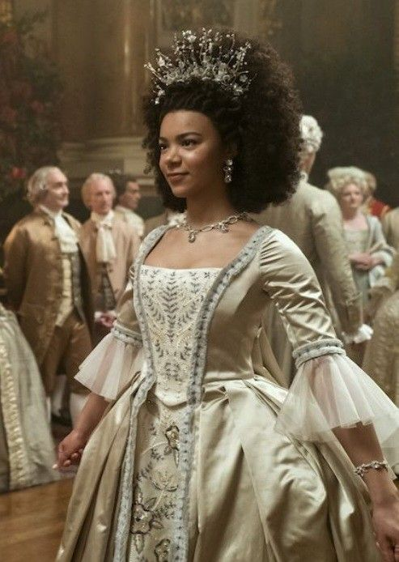
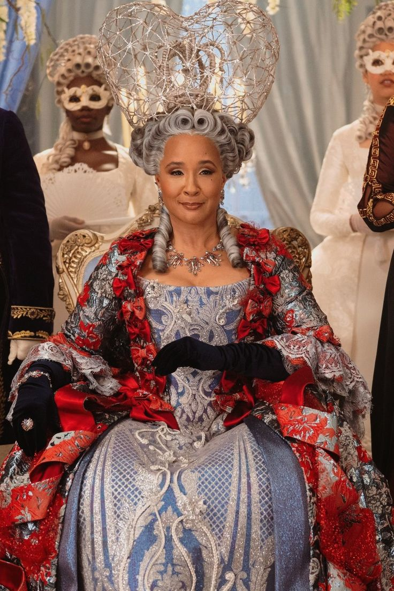

Softness as Strategy



Astrid Leong's authority operates through restraint rather than spectacle. Neutral tones, vertical framing and emotional opacity allow elegance to function as strategic distance instead of vulnerability.
Young Queen Charlotte’s authority operates through ceremonial softness. Pale textiles, diffused lighting, and delicate embroidery construct an image of gentleness, yet her posture remains upright and self-composed. The movement of the gown expands suggests elegnace rather than fragility.Softness becomes strategic becomes a diplomatic surface through which authority can appear without confrontation.
In contrast, older Queen Charlotte’s authority appears fully institutionalized.The elaborate crown, structured costume and symmetrical poture establish a visual architecture of heirarchy.Rather than relying on ceremonial softness, the image communicates permanence and command.Her stillness reinforces the idea that authority no longer needs perfomance; it simply occupies space.